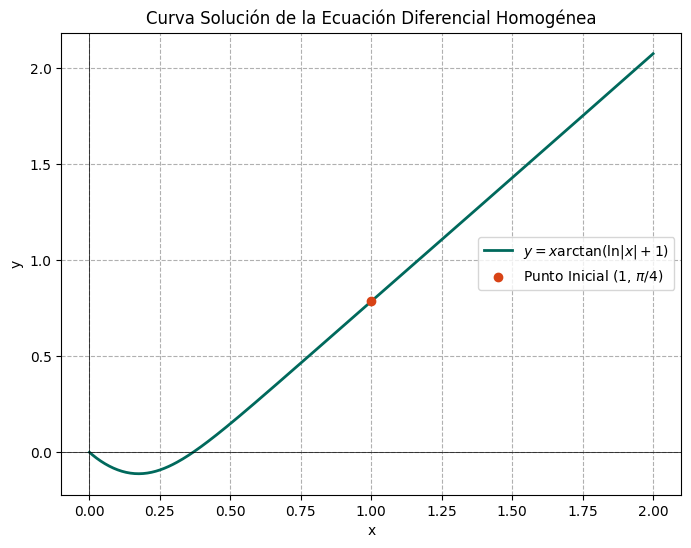
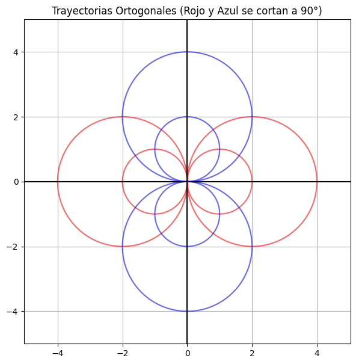

Existen ecuaciones diferenciales que a simple vista no son separables, pero que exhiben una simetría algebraica particular. Decimos que una función \( f(x,y) \) es homogénea de grado \( n \) si al escalar sus variables por un factor \( t \), la función se escala por \( t^n \). Es decir: \( f(tx, ty) = t^n f(x,y) \).
Una ecuación diferencial de la forma \( M(x,y)dx + N(x,y)dy = 0 \) es homogénea si \( M \) y \( N \) son funciones homogéneas del mismo grado. La magia de estas ecuaciones radica en que siempre podemos transformarlas en ecuaciones separables mediante una simple sustitución algebraica: \( y = ux \) (o \( x = vy \)).
Objetivos de la sesión:
El método general consiste en hacer \( y = ux \) (donde \( u \) es una función dependiente de \( x \)). Al diferenciar obtenemos \( dy = u dx + x du \). Al sustituir esto en la ecuación original, la variable original \( y \) desaparece, y el resultado es invariablemente una ecuación separable en las variables \( u \) y \( x \).
Resuelve la ecuación diferencial: $$ (x^2 + y^2)dx - xy dy = 0 $$
Solución: Verificamos homogeneidad: los coeficientes son de grado 2. Sea \( y = ux \), entonces \( dy = u dx + x du \). Sustituimos:
$$ (x^2 + u^2 x^2)dx - x(ux)(u dx + x du) = 0 $$
Factorizamos \( x^2 \) (asumiendo \( x \neq 0 \)) y simplificamos:
$$ x^2(1 + u^2)dx - x^2 u (u dx + x du) = 0 \implies (1 + u^2)dx - u^2 dx - ux du = 0 $$
$$ dx - ux du = 0 \implies \frac{dx}{x} = u du $$
Integrando obtenemos: \( \ln|x| = \frac{u^2}{2} + C \). Regresando a la variable original \( u = y/x \):
$$ \ln|x| = \frac{y^2}{2x^2} + C \implies y^2 = 2x^2(\ln|x| - C) $$
Resuelve: $$ x \frac{dy}{dx} = y + \sqrt{x^2 - y^2} $$
Solución: Dividimos entre \( x \) para verla en la forma \( \frac{dy}{dx} = f(y/x) \):
$$ \frac{dy}{dx} = \frac{y}{x} + \sqrt{1 - \left(\frac{y}{x}\right)^2} $$
Usamos \( y = ux \), donde \( \frac{dy}{dx} = u + x\frac{du}{dx} \):
$$ u + x\frac{du}{dx} = u + \sqrt{1 - u^2} \implies x\frac{du}{dx} = \sqrt{1 - u^2} $$
Separando variables:
$$ \frac{du}{\sqrt{1 - u^2}} = \frac{dx}{x} \implies \arcsin(u) = \ln|x| + C $$
Por lo cual, la solución general es: $$ \arcsin\left(\frac{y}{x}\right) = \ln|x| + C \implies y = x \sin(\ln|x| + C) $$
Resuelve: $$ (x e^{y/x} + y)dx - x dy = 0 $$
Solución: Esta es homogénea. Sustituimos \( y = ux \), \( dy = u dx + x du \):
$$ (x e^u + ux)dx - x(u dx + x du) = 0 $$
Dividiendo por \( x \):
$$ (e^u + u)dx - u dx - x du = 0 \implies e^u dx - x du = 0 $$
Separando variables: \( \frac{dx}{x} = e^{-u} du \).
Integrando: \( \ln|x| = -e^{-u} + C \). Regresando a las variables originales \( y, x \):
$$ \ln|x| = -e^{-y/x} + C $$
Resuelve la ecuación y grafica la curva de solución particular que pasa por \( (1, \pi/4) \): $$ x \frac{dy}{dx} = y + x \cos^2\left(\frac{y}{x}\right) $$
Solución Analítica: Reescribimos como \( \frac{dy}{dx} = \frac{y}{x} + \cos^2\left(\frac{y}{x}\right) \). Con \( y = ux \):
$$ u + x\frac{du}{dx} = u + \cos^2(u) \implies x\frac{du}{dx} = \cos^2(u) $$
Separando e integrando:
$$ \int \sec^2(u) du = \int \frac{dx}{x} \implies \tan(u) = \ln|x| + C $$
Para hallar \( C \), usamos \( x=1, y=\pi/4 \implies u = \pi/4 \):
$$ \tan(\pi/4) = \ln(1) + C \implies 1 = 0 + C \implies C = 1 $$
La curva solución es: $$ \tan(y/x) = \ln|x| + 1 \implies y = x \arctan(\ln|x| + 1) $$ En la figura siguiente se muestra la gráfica de la curva solución

Resuelve: \( \frac{dy}{dx} = \frac{x+y}{y-x} \)
Solución: Esta es homogénea de grado 1. Sea \( y = ux \):
$$ u + x\frac{du}{dx} = \frac{x + ux}{ux - x} = \frac{1 + u}{u - 1} $$
Restamos \( u \) en ambos lados:
$$ x\frac{du}{dx} = \frac{1 + u}{u - 1} - u = \frac{1 + u - u^2 + u}{u - 1} = \frac{1 + 2u - u^2}{u - 1} $$
Separando variables:
$$ \frac{u - 1}{1 + 2u - u^2} du = \frac{dx}{x} $$
La integral de la izquierda se resuelve por cambio de variable \( w = 1 + 2u - u^2 \implies dw = (2 - 2u)du = -2(u - 1)du \):
$$ -\frac{1}{2} \int \frac{dw}{w} = \int \frac{dx}{x} \implies -\frac{1}{2} \ln|1 + 2u - u^2| = \ln|x| + C $$
Simplificando y volviendo a \( y/x \), se obtiene: \( x^2 + 2xy - y^2 = C_1 \).
Encuentra las trayectorias ortogonales de la familia de circunferencias tangentes al eje \( y \) en el origen: \( x^2 + y^2 = 2cx \).
Solución paso a paso:
1. Primero, obtenemos la EDO de la familia original derivando implícitamente:
$$ 2x + 2y y' = 2c \implies y' = \frac{2c - 2x}{2y} = \frac{c - x}{y} $$
2. Debemos eliminar el parámetro \( c \). De la ecuación original, \( c = \frac{x^2 + y^2}{2x} \). Sustituyendo en la derivada:
$$ y' = \frac{\frac{x^2 + y^2}{2x} - x}{y} = \frac{y^2 - x^2}{2xy} $$
3. Para las trayectorias ortogonales, el campo direccional es perpendicular. Hacemos el cambio \( y' \to -\frac{1}{y'} \):
$$ y'_{ortogonal} = \frac{2xy}{x^2 - y^2} $$
Ambos polinomios en el numerador y denominador son homogéneos de grado 2. Dividimos el numerador y el denominador entre \(x^2\):
$$ \frac{dy}{dx} = \frac{\frac{2xy}{x^2}}{\frac{x^2 - y^2}{x^2}} = \frac{2\left(\frac{y}{x}\right)}{1 - \left(\frac{y}{x}\right)^2} $$
Hacemos la sustitución \(y = vx\), por lo que su derivada es \(\frac{dy}{dx} = v + x\frac{dv}{dx}\). Sustituimos en la ecuación:
$$ v + x\frac{dv}{dx} = \frac{2v}{1 - v^2} $$
Agrupamos los términos con \(v\) en un lado:
$$ x\frac{dv}{dx} = \frac{2v}{1 - v^2} - v = \frac{2v - v(1 - v^2)}{1 - v^2} = \frac{2v - v + v^3}{1 - v^2} = \frac{v^3 + v}{1 - v^2} = \frac{v(v^2 + 1)}{1 - v^2} $$
Reorganizamos mediante separación de variables:
$$ \frac{1 - v^2}{v(v^2 + 1)} dv = \frac{dx}{x} $$
Descomponemos en fracciones parciales el lado izquierdo:
$$ \left( \frac{1}{v} - \frac{2v}{v^2 + 1} \right) dv = \frac{dx}{x} $$
Integramos término a término:
$$ \ln|v| - \ln(v^2 + 1) = \ln|x| + \ln|C_1| $$
Aplicamos propiedades de los logaritmos:
$$ \ln\left|\frac{v}{v^2 + 1}\right| = \ln|C_1 x| \implies \frac{v}{v^2 + 1} = C_1 x $$
Sustituimos \(v = \frac{y}{x}\):
$$ \frac{\frac{y}{x}}{\left(\frac{y}{x}\right)^2 + 1} = C_1 x \implies \frac{\frac{y}{x}}{\frac{y^2 + x^2}{x^2}} = C_1 x \implies \frac{xy}{y^2 + x^2} = C_1 x $$
Simplificamos \(x\) de ambos lados y reordenamos:
$$ \frac{y}{x^2 + y^2} = C_1 \implies y = C_1(x^2 + y^2) \quad \text{o bien} \quad x^2+y^2= 2ky $$ (donde hemos usado que \(2k=1/C_1\)), esta ecuación representa una familia de circunferencias tangentes al eje \( x \). En la figura siguiente se muestra la gráfica de la curva solución

Se desea diseñar un espejo reflector de manera que todos los rayos de luz provenientes de una fuente puntual en el origen se reflejen en un haz paralelo al eje \( x \). Usando las leyes de reflexión óptica, la pendiente de la curva del espejo \( y' \) satisface la ecuación homogénea: \( x + y y' = \sqrt{x^2 + y^2} \).
Solución paso a paso:
1. Despejamos \( y' \): \( \frac{dy}{dx} = \frac{-x + \sqrt{x^2+y^2}}{y} \)
2. Sustituimos \( y = ux \), \( dy/dx = u + x u' \):
$$ u + x u' = \frac{-x + x\sqrt{1+u^2}}{ux} = \frac{-1 + \sqrt{1+u^2}}{u} $$
3. Despejamos \( x u' \): y se obtiene la ecuación diferencial
$$x \frac{du}{dx} = \frac{-1 + \sqrt{1+u^2} - u^2}{u}$$
Agrupamos todos los términos que dependen de \(u\) en el lado izquierdo y los que dependen de \(x\) en el lado derecho:
$$\frac{u \, du}{-1 + \sqrt{1+u^2} - u^2} = \frac{dx}{x}$$
Simplificamos del denominador izquierdo. Notemos que el denominador se puede agrupar como:
$$\sqrt{1+u^2} - (1 + u^2)$$
Si hacemos un cambio algebraico o sustitución auxiliar \(w = \sqrt{1+u^2}\), entonces \(w^2 = 1+u^2\), por lo que \(u \, du = w \, dw\). El denominador es \(w - w^2 = w(1-w)\).
Sustituyendo en la integral:
$$\int \frac{w \, dw}{w(1-w)} = \int \frac{dw}{1-w} = -\ln|1-w| = -\ln|1 - \sqrt{1+u^2}|$$
Integrando el lado derecho tenemos \(\int \frac{dx}{x} = \ln|x| + C \).
Igualando ambas integrales y aplicando propiedades de los logaritmos se tiene
$$-\ln|-\sqrt{1+u^2} + 1| = \ln|x| + C \implies \ln(x (1 - \sqrt{1+u^2})=-C$$
exponenciando ambos lados, obtenemos la solución general:
$$x(1-\sqrt{1+u^2} ) = -K $$
donde \(K = -e^{-C}\) es una constante arbitraria. Si usamoa \(u=y/x\) se obtiene
$$x- \sqrt{x^2+y^2} =- K $$ o bien $$\sqrt{x^2+y^2} =x+K \implies x^2+y^2=x^2+2Kx+K^2$$ Finalmente, se tiene el famoso resultado de que la curva es una parábola de la forma $$ y^2= 2Kx+K^2 $$
Veamos el comportamiento global de las soluciones. Copia y ejecuta este bloque en tu Google Colab para generar el campo de direcciones (Slope Field) de la ecuación del Ejercicio 1: \( y' = \frac{x^2+y^2}{xy} \). ¡Observa la simetría radial típica de las ecuaciones homogéneas!
import numpy as np
import matplotlib.pyplot as plt
# Crear una malla de puntos (Grid)
x = np.linspace(-5, 5, 20)
y = np.linspace(-5, 5, 20)
X, Y = np.meshgrid(x, y)
# Evitar división por cero
Y = np.where(Y == 0, 0.001, Y)
X = np.where(X == 0, 0.001, X)
# Definir la ecuación diferencial (Pendiente y')
U = 1
V = (X**2 + Y**2) / (X * Y)
# Normalizar los vectores para que todas las flechas tengan el mismo tamaño
N = np.sqrt(U**2 + V**2)
U2, V2 = U/N, V/N
plt.figure(figsize=(8, 8))
plt.quiver(X, Y, U2, V2, color='#1A237E', alpha=0.7)
plt.title("Campo de Direcciones: $y' = (x^2+y^2)/xy$")
plt.xlabel("x")
plt.ylabel("y")
plt.grid(True, linestyle=':')
plt.axhline(0, color='black')
plt.axvline(0, color='black')
plt.show()
Vamos a usar la Inteligencia Artificial para entender la teoría de funciones homogéneas de Euler. Copia y pega el siguiente prompt en tu IA de preferencia (ChatGPT/Gemini):
"Actúa como un matemático riguroso pero didáctico. Explícame el Teorema de Euler sobre funciones homogéneas, que establece que si f(x,y) es homogénea de grado n, entonces x(∂f/∂x) + y(∂f/∂y) = n f(x,y). Demuéstralo para la función f(x,y) = x^3 + x y^2. Termina la respuesta explicándome brevemente cómo se relaciona esto geométricamente con la ecuación diferencial homogénea M(x,y)dx + N(x,y)dy = 0."
Tarea de análisis: Lee atentamente la demostración que te da la IA con derivadas parciales. Verifica a mano si las derivadas que calculó son correctas. ¿Pudiste comprender el concepto geométrico de "conos" o "escalas" que la IA propuso al final?
Comprueba tus conocimientos conceptuales de esta sesión seleccionando la respuesta correcta:
1. ¿Cuál de las siguientes funciones es homogénea de grado 3?
2. Para transformar una ecuación diferencial homogénea de la forma \( \frac{dy}{dx} = f(y/x) \) en una separable, la sustitución estándar es:
3. Al aplicar la sustitución \( y = ux \) respecto a la variable independiente \( x \), la derivada \( \frac{dy}{dx} \) se transforma en:
4. Determina si la ecuación \( (x - y \ln y + y \ln x)dx + x(\ln y - \ln x)dy = 0 \) es homogénea.
5. Geométricamente, si se tiene una familia de curvas que se modela con una ecuación diferencial homogénea, las isoclinas (curvas de igual pendiente) siempre son: